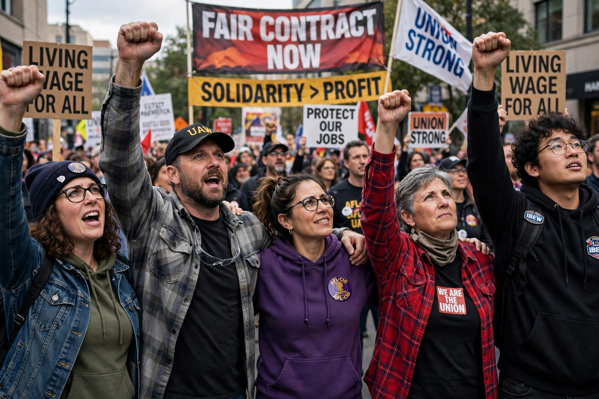

Solidarity is an awareness of shared interests, objectives, standards and sympathies creating a psychological sense of unity of groups or classes. It refers to ties that bind people together in a society, and is a central concept in sociology, political philosophy and labour movements.

Émile Durkheim distinguished mechanical solidarity, based on similarity and shared beliefs in traditional societies, from organic solidarity, based on interdependence between specialised roles in modern societies, in The Division of Labour in Society (1893).
In the labour movement, solidarity underpins union organisation, strikes and mutual aid — captured in slogans such as "an injury to one is an injury to all." International solidarity extends support across borders to workers, anti-colonial and human-rights struggles. The Polish trade union Solidarność, founded in 1980 under Lech Wałęsa, took its name from the concept and helped end communist rule in Poland.
Philosophers debate whether solidarity is a feeling, a moral duty or a practice, and how it differs from charity: solidarity implies standing with others as equals in a shared struggle rather than giving from a position of superiority. It is also invoked in welfare-state ethics, Catholic social teaching and bioethics.